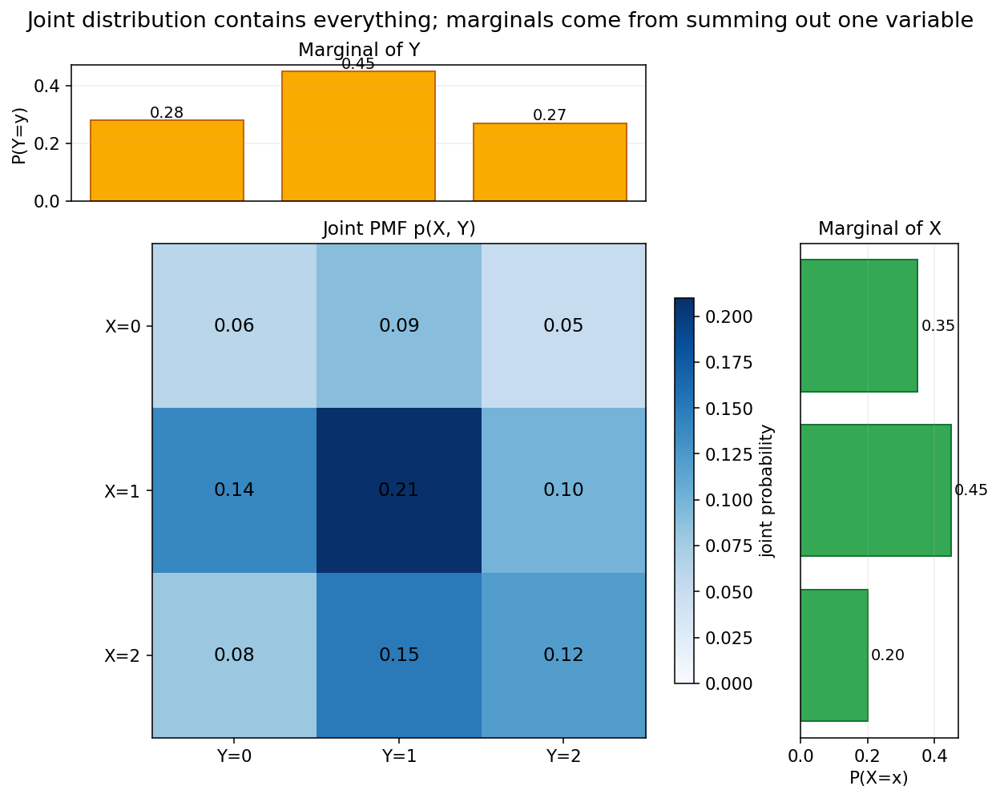
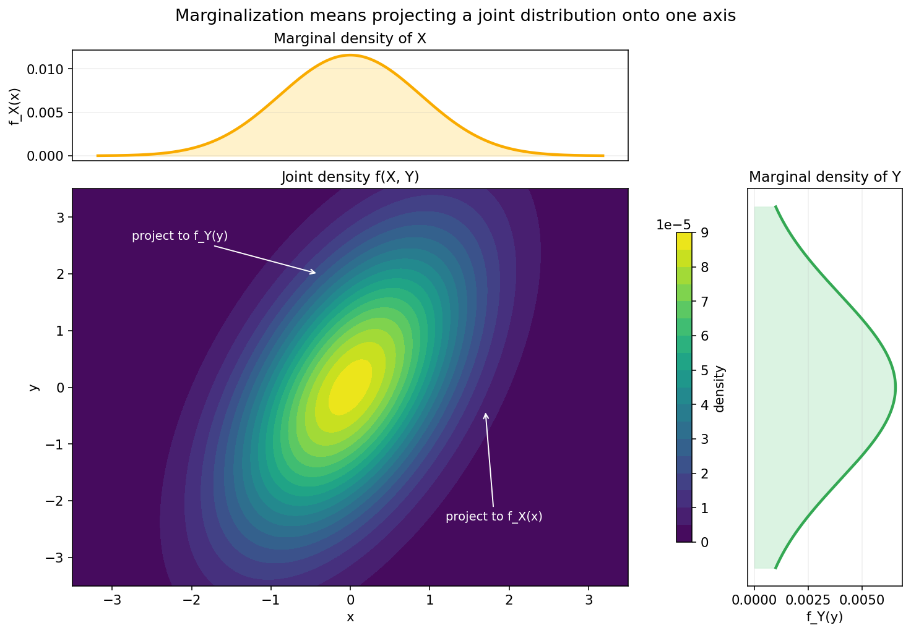
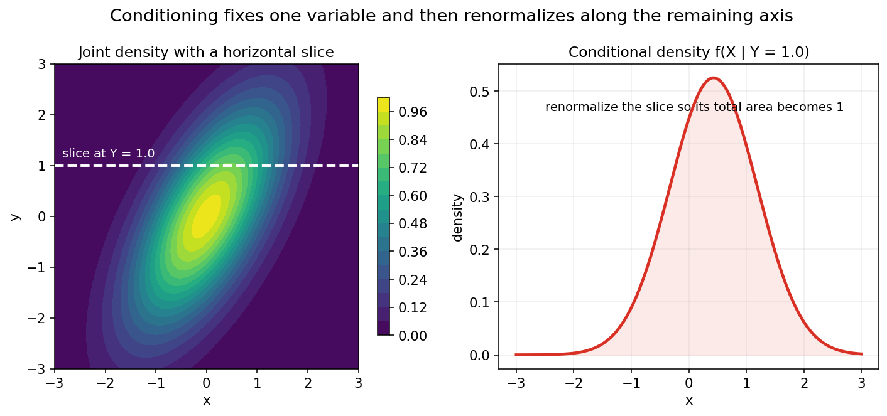
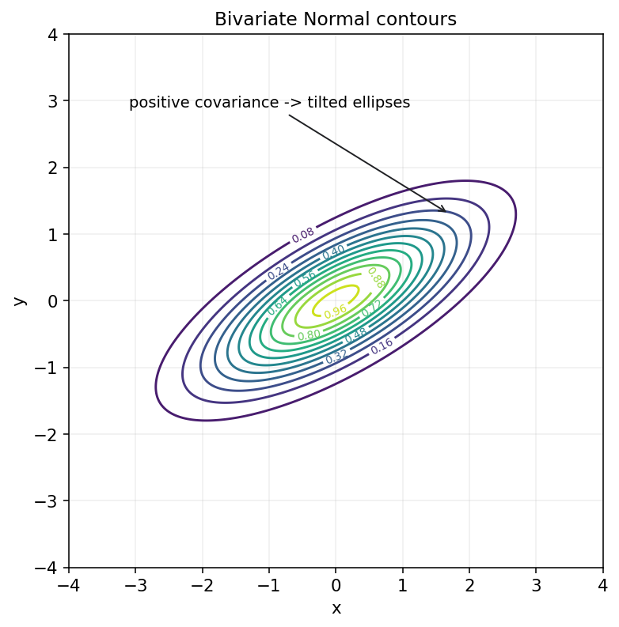

概率论第四章教程: 多维随机变量, 条件结构与变量变换
第三章解决的是"一个随机变量怎样分布".
但现实里, 我们几乎总会同时面对多个随机量:1. 两个变量会不会一起变大, 一起变小?
2. 知道其中一个以后, 另一个的分布会怎样改变?
3. 如果把它们加起来, 相减, 取最大值, 甚至做更复杂变换, 新变量会服从什么分布?这一章要做的, 就是把单变量概率语言自然升级成多变量语言.
0. 先看全章主线
第四章的主线可以压成下面这张图:
flowchart LR
A["多个随机变量<br/>联合出现"] --> B["联合分布<br/>p(x,y) 或 f(x,y)"]
B --> C["边缘分布<br/>把另一个变量求和/积分掉"]
B --> D["条件分布<br/>固定一个变量后重新归一化"]
C --> E["独立性<br/>联合能否分解成边缘乘积"]
D --> F["条件结构<br/>知道一个变量如何改变另一个"]
E --> G["协方差与相关系数<br/>描述共同变化"]
B --> H["变量变换<br/>和, 差, 最大值, 最小值, 函数变换"]
H --> I["Jacobian 方法<br/>连续变量变换"]
G --> J["二维正态<br/>现代概率模型的重要模板"]
I --> J一句话概括这一章:
多维概率研究的不只是"各自怎么分布",
更重要的是"它们怎样一起变化",
而变量变换则把这种联合结构进一步变成可计算的新分布.
1. 为什么单变量不够: 现实问题总是在同时看多个量
1.1 常见场景
单变量问题当然很多, 但更多时候我们关心的是成对或成组的量:
- 用户的点击次数和停留时长
- 身高和体重
- 图像中的像素强度和类别标签
- 股票收益和波动率
- 传感器 A 读数和传感器 B 读数
在这些问题里, 光知道每个变量各自的分布还不够.
因为你还会问:
- 它们会不会同时偏大?
- 一个变量固定时, 另一个会怎样变化?
- 二者叠加后的结果是什么?
1.2 第四章真正增加了什么
第三章的主角是单个随机变量 $X$.
这一章的主角变成:
也就是说, 我们开始研究随机向量.
这一步最关键的变化是:
概率不再只分布在一条数轴上,
而是分布在平面, 空间, 甚至更高维空间里.
2. 二维随机变量: 把两个量一起看
2.1 二维随机变量是什么
若 $X,Y$ 都定义在同一个样本空间上, 那么
就构成一个二维随机变量.
你可以把它看成:
每次试验不再给出一个数, 而是给出一个二维坐标点.
例如:
- 两枚骰子的点数 $(X,Y)$
- 用户一天内的点击次数和购买次数 $(X,Y)$
- 设备温度和压力 $(X,Y)$
2.2 为什么"同一个样本空间"很重要
因为 $X$ 和 $Y$ 不是两个互不相干的数字, 它们来自同一次随机机制.
这意味着它们之间可能有依赖关系, 也可能没有.
后面所谓联合分布, 条件分布, 协方差, 相关性, 全都在研究这种共同结构.
3. 联合分布: 两个变量怎样一起出现
3.1 二维离散型的联合 PMF
若 $X,Y$ 为离散型随机变量, 则它们的联合概率质量函数定义为
它回答的是:
$X$ 恰好取 $x$, 同时 $Y$ 恰好取 $y$ 的概率是多少?
并且必须满足
3.2 二维连续型的联合 PDF
若 $X,Y$ 为连续型随机变量, 则它们的联合密度函数 $f_{X,Y}(x,y)$ 满足:
其中 $A$ 是平面上的某个区域.
这时真正的概率来自平面区域下的体积, 而不是某一点的高度.
3.3 一个离散联合分布表
比如 $X,Y$ 都只取 $\{0,1,2\}$, 其联合 PMF 可以写成一个表格:

这张图最好记住两点:
- 中间的大表记录的是联合结构
- 上方和右侧可以从表格里求出边缘分布
3.4 联合分布比边缘分布信息更多
这是第四章第一句最重要的话:
只知道 $X$ 和 $Y$ 各自怎么分布, 往往还不知道它们是怎样一起变化的.
因为:
- 同样的边缘分布
- 可以对应很多不同的联合分布
这也是为什么"联合分布包含的信息最多".
4. 联合分布函数: 用累计概率统一描述
4.1 定义
二维随机变量 $(X,Y)$ 的联合分布函数定义为
它表示的是:
平面左下角矩形区域里的累计概率
4.2 为什么它是二维版的 CDF
第三章里:
第四章只是把"一个方向上的累计"扩展成"两个方向同时累计".
所以联合分布函数依旧是一个统一入口:
- 离散型可以从联合 PMF 累加得到
- 连续型可以从联合 PDF 积分得到
4.3 区域概率如何由联合 CDF 得到
对矩形区域:
可以由四个角的联合 CDF 做加减得到.
它本质上和一维区间概率的差分类似, 只是多了一维.
这一节你现在只要先建立直觉即可, 真正常用的还是联合 PMF / PDF.
5. 边缘分布: 把另一个变量"求掉"
5.1 离散情形
由联合 PMF 可以得到 $X$ 的边缘分布:
同理
意思非常直接:
只关心 $X=x$ 时, 不管 $Y$ 取什么, 全部加起来.
5.2 连续情形
由联合 PDF 可以得到边缘密度:
5.3 为什么叫"边缘"
如果把联合分布表写成矩阵, 对某一行或某一列求和后得到的数, 常常写在表格边缘.
这个名字就这么来的.
但更本质的理解是:
边缘化就是把另一个变量消掉, 只保留当前变量本身的信息.
5.4 直观图像

这张图展示的是:
- 中间是二维联合密度
- 往某个方向求和/积分, 相当于把联合分布投影到一条轴上
- 得到的就是边缘分布
5.5 一个高频提醒
边缘分布能告诉你"单个变量各自怎么分布", 但它已经把变量之间的配对结构抹掉了.
所以:
从联合到边缘会丢信息,
从边缘一般恢复不出唯一的联合.
6. 条件分布: 固定一个变量以后另一个怎么变
6.1 离散条件分布
若 $P(Y=y)>0$, 则
这说明:
条件分布 = 固定一个变量后的切片, 再归一化
6.2 连续条件密度
若 $f_Y(y)>0$, 则
这和离散情形完全同一条逻辑:
- 先取出联合密度在 $Y=y$ 这一条切片上的信息
- 再除以边缘密度, 让总面积回到 1
6.3 直观图像

图中左边是一整个二维联合密度.
一旦把 $Y$ 固定在某个值上, 就相当于切出一条水平截面.
右边则是在这条截面上重新归一化后得到的条件密度.
6.4 条件分布和边缘分布的区别
- 边缘分布: 完全不管另一个变量
- 条件分布: 另一个变量先固定住, 再看当前变量
这两个概念经常一起出现, 但不能混.
7. 多维独立性: 联合能否分解成边缘乘积
7.1 离散与连续的统一定义
若对所有可能的 $(x,y)$ 都有
则称 $X,Y$ 独立.
连续情形下则是
7.2 这一定义的真正含义
它表示:
二者共同出现的结构, 完全可以拆成各自单独出现的结构
也就是说, 联合里没有额外的耦合信息.
7.3 独立与条件分布的等价说法
若 $X,Y$ 独立, 则
或者离散情形下
这说明:
知道 $Y$ 以后, 并不会改变 $X$ 的分布.
7.4 一个容易犯错的地方
看到联合分布"不太像相关", 不足以判断独立.
真正的独立是严格的可分解条件, 不是肉眼猜出来的.
8. 协方差与相关系数: 怎样量化共同变化
8.1 协方差
协方差定义为
它衡量的是:
当 $X$ 偏离自己的平均水平时, $Y$ 是否也倾向于同方向偏离
如果:
- 协方差为正, 往往表示同涨同落倾向
- 协方差为负, 往往表示一高一低倾向
- 协方差为 0, 只能说明线性关系层面上没有明显共同偏移
8.2 相关系数
为了把协方差做无量纲归一化, 定义相关系数:
它满足
8.3 不相关不等于独立
这是第四章最重要的易错点之一.
如果
只能说二者不相关.
这并不自动推出独立.
原因是:
协方差只看线性关系,
独立则要求整个联合结构完全分解.
后面会看到, 某些非线性依赖关系完全可能让协方差为 0, 但变量仍然不独立.
9. 和, 差, 最大值, 最小值: 新变量的分布怎么来
9.1 为什么变量变换重要
在真实问题里, 我们常常不直接使用原始变量, 而是关心它们的组合:
- 总分 $X+Y$
- 误差差值 $X-Y$
- 最大风险 $\max(X,Y)$
- 最小寿命 $\min(X,Y)$
所以关键问题变成:
已知原变量分布后, 新变量的分布怎样得到?
9.2 先看离散情形的和
若 $X,Y$ 为离散随机变量, 则
若再进一步独立, 可写成
这就是离散卷积.
9.3 最大值和最小值
例如:
若 $X,Y$ 独立, 则
也就是
同理:
若独立, 也能拆成乘积.
9.4 这一节真正想训练什么
它训练的是一种新的观察方式:
先把新变量写成原变量上的事件条件,
再回到联合分布上去算.
这个思路比死记单独公式更重要.
10. 变量函数的分布: 一维变换先讲直觉
10.1 单调变换最简单
若 $Y=g(X)$, 且 $g$ 单调递增, 那么
于是
若进一步可导, 则密度可写成
10.2 为什么会出现绝对值因子
因为变量变换会改变坐标尺度.
例如:
- 原来一小段长度是 $dx$
- 变换后变成另一小段长度 $dy$
概率本身不能凭空变多变少, 所以密度必须按尺度因子重新调整.
10.3 一个最简单例子
若 $X \sim \mathrm{Uniform}(0,1)$, 定义
则 $Y$ 在 $[0,2]$ 上均匀分布, 密度应为
这里就已经能看出:
区间长度扩大了 2 倍, 密度高度就缩小到原来的一半.
11. Jacobian 方法: 二维连续变量变换的入口
11.1 为什么一维公式不够
当变换对象变成二维向量时:
光看一维导数已经不够, 因为平面上的小面积单元也会被拉伸, 旋转, 压缩.
这时需要用 Jacobian.
11.2 最基本的公式
若变换可逆且足够光滑, 则
这里的 determinant 就是在量化:
面积单元在变换前后被放大或缩小了多少倍
11.3 一个经典例子
若
则反变换为
对应 Jacobian 行列式为
于是新变量密度会带上这个尺度因子.
11.4 这一节的学习目标
第一遍学到这里, 不要求把所有变换题都秒做出来.
真正要先建立的是:
- 变量变换本质上是在换坐标
- 密度必须补偿面积/体积尺度变化
- Jacobian 就是在描述这种尺度变化
12. 多元正态分布初步: 多维世界里的核心模板
12.1 为什么它重要
单变量里, Normal 分布几乎无处不在.
多维里也有对应的核心对象: 多元正态分布.
它在:
- 回归分析
- 高斯判别分析
- 卡尔曼滤波
- 变分推断
- 深度学习近似分析
里都非常常见.
12.2 二维正态的直觉图像
二维正态的等密度线通常是椭圆.

这张图最好记住三点:
- 若协方差为正, 椭圆会向右上倾斜
- 若协方差为负, 椭圆会向右下倾斜
- 若两个方向完全不耦合, 椭圆主轴会与坐标轴对齐
12.3 参数到底在控制什么
二维正态通常由:
- 均值向量
- 协方差矩阵
决定.
其中:
- 均值向量决定中心位置
- 协方差矩阵决定拉伸方向, 扩散尺度, 倾斜角度
这其实就是第五章协方差矩阵的几何直觉预告.
12.4 一个重要但先不展开的事实
在多元正态族里:
不相关可以推出独立
这在一般分布里并不成立, 但在正态族里是个特殊而强大的性质.
现在先记住它, 后面再细化.
13. 本章主线总结
第四章压成最短的一条线, 就是:
- 联合分布描述多个变量怎样一起出现
- 边缘分布通过求和/积分把其他变量消掉
- 条件分布通过固定一个变量后重新归一化得到
- 独立性等价于联合分布可分解成边缘乘积
- 变量变换通过事件重写和 Jacobian 得到新分布
这五句话一旦稳住, 后面期望方差, 回归模型, 贝叶斯模型都会顺很多.
14. 典型题型与实战清单
这一章最常见的题型, 基本都可以归到下面几类:
- 由联合求边缘
- 离散: 对另一维求和
- 连续: 对另一维积分
- 由联合求条件
- 先算边缘
- 再做归一化
- 判断独立性
- 看联合能否分解
- 不要只看边缘相似或协方差大小
- 求和, 最大值, 最小值分布
- 先把新变量事件写成原变量上的区域条件
- 变量变换
- 一维单调变换
- 二维 Jacobian 变换
- 二维正态理解题
- 均值控制中心
- 协方差控制椭圆形状和方向
一个实战工作流可以直接记成:
先画联合结构 -> 再投影出边缘 -> 再切片看条件 -> 最后做变换
15. 典型误区
误区 1: 只知道边缘分布, 就以为知道了联合分布
边缘分布一般恢复不出唯一的联合结构.
误区 2: 边缘积分或求和范围写错
连续情形常见错误是积分区域没看清.
很多题真正难点就在支持集范围.
误区 3: 把不相关误认为独立
这在一般分布里是错误的.
只有在某些特殊分布族, 如正态族里, 才有更强结论.
误区 4: 条件分布忘了归一化
条件分布不是直接截一刀就结束, 还要让总概率重新回到 1.
误区 5: 变量替换漏掉 Jacobian
这是连续变量变换题里的头号错误.
误区 6: 只会背公式, 不会把新变量翻回原变量上的事件
变量变换题最稳的路线往往不是背模板, 而是先回到联合结构上重新表达事件.
16. 和前后章节的连接点
这一章向后连接的路线非常清楚:
- 第五章期望, 方差, 协方差矩阵
- 有了联合分布以后, 才能真正讨论共同波动和相关结构
- 第六章极限定理
- 随机向量和变量和的分布是后续渐近分析的重要基础
- 第十章回归与方差分析
- 多元关系建模直接建立在这里的联合结构和协方差直觉上
- 第十七章概率模型与潜变量模型
- 条件分布和边缘化是图模型, EM, 混合模型的核心操作
所以第四章其实是从"单变量概率"正式进入"概率模型思维"的第一步.
17. 和机器学习, 数据分析, 科研实践的连接点
如果你是为了后面的建模和机器学习来学这章, 最值得提前记住的是:
- 联合, 边缘, 条件
- 这是所有概率图模型和统计学习模型的基本语法
- 边缘化
- 隐变量模型, 贝叶斯推断, 序列模型里反复要做
- 条件分布
- 监督学习里的很多目标本质上都在建模 $P(Y \mid X)$
- Jacobian
- 正常izing flow, 变量变换采样, 概率密度重参数化都离不开它
- 多元正态
- 现代统计和机器学习里出现频率极高
这章的工程价值可以压成一句话:
以后看到多个量一起出现时, 你会开始自然地问联合结构, 边缘结构, 条件结构和变换结构.
18. 本章收尾
如果说第三章是在建立"一个随机变量怎样分布"的直觉, 那第四章就是在回答:
当随机变量不止一个时, 概率怎样在更高维空间里组织起来.
只要你真正抓住下面这句话, 这一章就算入门了:
联合分布讲整体,
边缘分布讲投影,
条件分布讲切片,
Jacobian 讲换坐标时概率密度怎样补偿尺度变化.